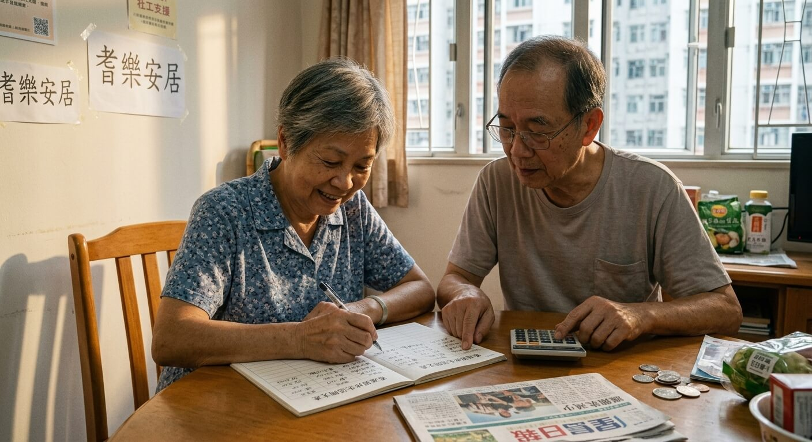
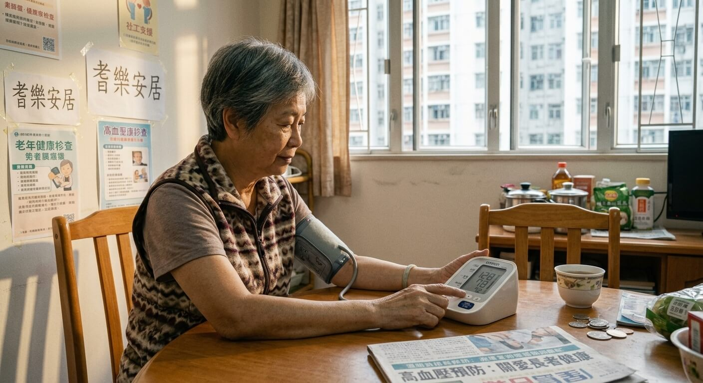

融心堂 - 正面迎接黃金歲月 · 活出充實晚年 - 編者: Mabel Yeung 香港社工
↓ 向下捲動查看完整手冊內容 ↓
進入老年是人生自然階段，生理與心理都會出現變化。正面接受並積極應對，能讓晚年更安穩快樂；若過度比較過去或消極逃避，容易產生焦慮或情緒低落。家人理解這些轉變並給予支持，有助長者建立適應力。
頭髮變白稀疏、皮膚乾皺、身高略矮、脂肪分佈改變屬正常過程。宜保護皮膚、維持儀容與適量活動，而非緬懷青春或放任不良習慣。
淺睡與易醒較常見。保持規律作息、舒適環境，不必強迫睡足固定時數；避免午睡過長、刺激性飲食及自行服藥，持續不適應求醫。
視力、聽力衰退可使用合適輔助工具（眼鏡、助聽器等），勿因面子拒絕；保持活動避免孤立，突變或痛楚應及早檢查。
量力進行適合活動，戒煙、均衡飲食、控制體重。失禁或關節痛應求醫，學習處理技巧，勿因尷尬減少社交。
輕微健忘常見，可用記事工具輔助；保持活動與好奇心有助維持。若出現嚴重混亂（如忘記關火、迷路），應協助就醫，排除其他問題。
多數長者仍有情感與親密需求。消除誤解，維持健康生活、坦誠溝通，有疑難宜諮詢醫護，勿自行亂服補品。
晚年仍有學習能力，從生活、媒體、講座或中心活動中學習，重點在樂趣而非與人比較速度。

退休是重要轉變，帶來「失去」（收入、身份、規律等）也帶來「獲得」（時間自由、與家人相處、發展興趣等）。及早計劃、善用餘暇、維持健康生活與社交、量入為出、接受現實，能讓生活更充實。家人宜體諒並支持，勿因面子阻礙求助。

長期疾病常見於長者，但生活習慣影響很大。維持均衡飲食、適量活動、定期檢查與積極態度有助預防及管理。面對限制時尋求醫療與社區支持，避免諱疾忌醫或過度孤立。
哀傷是正常反應，長短因人而異。允許表達感受、家人支持、重整生活目標、重拾興趣及擴闊社交有助適應。避免重大決定或用不良方式逃避，必要時尋求輔導。尊重逝者可從生前對待與實際能力出發，不必強求形式。
抑鬱症是可治療的情緒病。若情緒低落持續兩週以上並影響生活（包括睡眠、食慾、興趣、精力、自我價值或有自殺想法），應及早就醫。成因包括遺傳、生理化學失衡、壓力事件與負面想法。長者常見誘因有退休轉變、身體退化、長期病、喪親、孤立等。治療包括心理治療、活動治療、藥物（需遵醫囑，不會上癮）等。家人應鼓勵求醫、給予情感與行動支持，並留意自殺徵兆。
認知障礙症是後天腦部疾病，並非正常老化。正常老化會有處理速度變慢、學習新事物較難等，但即時記憶與舊技能大致保持。真正認知障礙症會影響記憶、判斷、語言、自理等，並可能出現情緒行為變化。種類包括阿茲海默病（最常見）、血管性（與中風等有關）等。目前無法完全逆轉，但藥物可改善部分症狀，健康生活有助預防血管性類型。家人支持、參與活動、現實導向與家居安全調整很重要。護老者需注意自身壓力，適時尋求支援。
心理健康與身體健康、人際關係及認知活動互相影響。樂觀積極的心態有助身體機能與免疫力，良好社交可減少孤立風險。藝術與認知活動能穩定情緒、刺激大腦並擴闊圈子。
（第六要訣:可按實際需要延伸發展個人興趣與持續學習）